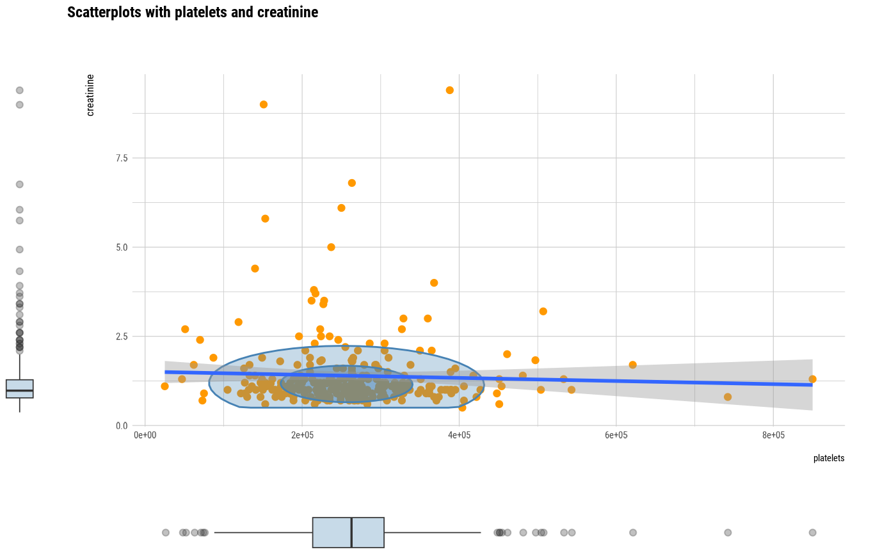
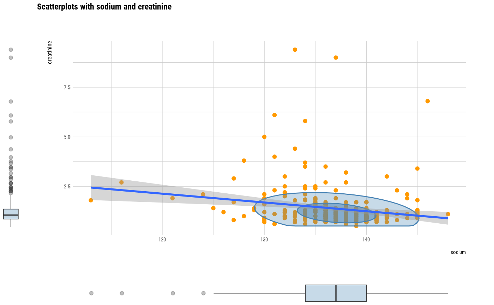

The compare_numeric() compute information to examine the relationship between numerical variables.
compare_numeric(.data, ...) # S3 method for data.frame compare_numeric(.data, ...)
Arguments
| .data | a data.frame or a |
|---|---|
| ... | one or more unquoted expressions separated by commas. You can treat variable names like they are positions. Positive values select variables; negative values to drop variables. These arguments are automatically quoted and evaluated in a context where column names represent column positions. They support unquoting and splicing. |
Value
An object of the class as compare based list. The information to examine the relationship between numerical variables is as follows each components. - correlation component : Pearson's correlation coefficient.
var1 : factor. The level of the first variable to compare. 'var1' is the name of the first variable to be compared.
var2 : factor. The level of the second variable to compare. 'var2' is the name of the second variable to be compared.
coef_corr : double. Pearson's correlation coefficient.
- linear component : linear model summaries
var1 : factor. The level of the first variable to compare. 'var1' is the name of the first variable to be compared.
var2 : factor.The level of the second variable to compare. 'var2' is the name of the second variable to be compared.
r.squared : double. The percent of variance explained by the model.
adj.r.squared : double. r.squared adjusted based on the degrees of freedom.
sigma : double. The square root of the estimated residual variance.
statistic : double. F-statistic.
p.value : double. p-value from the F test, describing whether the full regression is significant.
df : integer degrees of freedom.
logLik : double. the log-likelihood of data under the model.
AIC : double. the Akaike Information Criterion.
BIC : double. the Bayesian Information Criterion.
deviance : double. deviance.
df.residual : integer residual degrees of freedom.
Details
It is important to understand the relationship between numerical variables in EDA. compare_numeric() compares relations by pair combination of all numerical variables. and return compare_numeric class that based list object.
Attributes of return object
Attributes of compare_numeric class is as follows.
raw : a data.frame or a
tbl_df. Data containing variables to be compared. Save it for visualization with plot.compare_numeric().variables : character. List of variables selected for comparison.
combination : matrix. It consists of pairs of variables to compare.
See also
Examples
# Generate data for the example carseats <- ISLR::Carseats carseats[sample(seq(NROW(carseats)), 20), "Income"] <- NA carseats[sample(seq(NROW(carseats)), 5), "Urban"] <- NA library(dplyr) # Compare the all numerical variables all_var <- compare_numeric(carseats) # Print compare_numeric class object all_var#> $correlation #> # A tibble: 28 x 3 #> var1 var2 coef_corr #> <chr> <chr> <dbl> #> 1 Sales CompPrice 0.0641 #> 2 Sales Income 0.152 #> 3 Sales Advertising 0.270 #> 4 Sales Population 0.0505 #> 5 Sales Price -0.445 #> 6 Sales Age -0.232 #> 7 Sales Education -0.0520 #> 8 CompPrice Income -0.0807 #> 9 CompPrice Advertising -0.0242 #> 10 CompPrice Population -0.0947 #> # … with 18 more rows #> #> $linear #> # A tibble: 28 x 14 #> var1 var2 r.squared adj.r.squared sigma statistic p.value df logLik #> <chr> <chr> <dbl> <dbl> <dbl> <dbl> <dbl> <dbl> <dbl> #> 1 Sales Comp… 0.00411 0.00160 2.82 1.64 2.01e- 1 1 -982. #> 2 Sales Inco… 0.0232 0.0206 2.82 8.96 2.94e- 3 1 -932. #> 3 Sales Adve… 0.0726 0.0703 2.72 31.2 4.38e- 8 1 -967. #> 4 Sales Popu… 0.00255 0.0000412 2.82 1.02 3.14e- 1 1 -982. #> 5 Sales Price 0.198 0.196 2.53 98.2 7.62e-21 1 -938. #> 6 Sales Age 0.0537 0.0514 2.75 22.6 2.79e- 6 1 -971. #> 7 Sales Educ… 0.00270 0.000194 2.82 1.08 3.00e- 1 1 -982. #> 8 Comp… Inco… 0.00651 0.00388 15.4 2.48 1.17e- 1 1 -1577. #> 9 Comp… Adve… 0.000586 -0.00193 15.3 0.233 6.29e- 1 1 -1659. #> 10 Comp… Popu… 0.00897 0.00648 15.3 3.60 5.84e- 2 1 -1657. #> # … with 18 more rows, and 5 more variables: AIC <dbl>, BIC <dbl>, #> # deviance <dbl>, df.residual <int>, nobs <int> #># Compare the correlation that case of joint the Price variable all_var %>% "$"(correlation) %>% filter(var1 == "Price" | var2 == "Price") %>% arrange(desc(abs(coef_corr)))#> # A tibble: 7 x 3 #> var1 var2 coef_corr #> <chr> <chr> <dbl> #> 1 CompPrice Price 0.585 #> 2 Sales Price -0.445 #> 3 Price Age -0.102 #> 4 Income Price -0.0510 #> 5 Advertising Price 0.0445 #> 6 Population Price -0.0121 #> 7 Price Education 0.0117# Compare the correlation that case of abs(coef_corr) > 0.3 all_var %>% "$"(correlation) %>% filter(abs(coef_corr) > 0.3)#> # A tibble: 2 x 3 #> var1 var2 coef_corr #> <chr> <chr> <dbl> #> 1 Sales Price -0.445 #> 2 CompPrice Price 0.585# Compare the linear model that case of joint the Price variable all_var %>% "$"(linear) %>% filter(var1 == "Price" | var2 == "Price") %>% arrange(desc(r.squared))#> # A tibble: 7 x 14 #> var1 var2 r.squared adj.r.squared sigma statistic p.value df logLik #> <chr> <chr> <dbl> <dbl> <dbl> <dbl> <dbl> <dbl> <dbl> #> 1 Comp… Price 0.342 0.340 12.5 207. 4.50e-38 1 -1575. #> 2 Sales Price 0.198 0.196 2.53 98.2 7.62e-21 1 -938. #> 3 Price Age 0.0104 0.00795 23.6 4.20 4.11e- 2 1 -1831. #> 4 Inco… Price 0.00260 -0.0000391 28.0 0.985 3.22e- 1 1 -1804. #> 5 Adve… Price 0.00198 -0.000524 6.65 0.791 3.74e- 1 1 -1325. #> 6 Popu… Price 0.000147 -0.00236 148. 0.0587 8.09e- 1 1 -2564. #> 7 Price Educ… 0.000138 -0.00237 23.7 0.0549 8.15e- 1 1 -1833. #> # … with 5 more variables: AIC <dbl>, BIC <dbl>, deviance <dbl>, #> # df.residual <int>, nobs <int># Compare the two numerical variables two_var <- compare_numeric(carseats, Price, CompPrice) # Print compare_numeric class object two_var#> $correlation #> # A tibble: 1 x 3 #> var1 var2 coef_corr #> <chr> <chr> <dbl> #> 1 Price CompPrice 0.585 #> #> $linear #> # A tibble: 1 x 14 #> var1 var2 r.squared adj.r.squared sigma statistic p.value df logLik #> <chr> <chr> <dbl> <dbl> <dbl> <dbl> <dbl> <dbl> <dbl> #> 1 Price Comp… 0.342 0.340 19.2 207. 4.50e-38 1 -1749. #> # … with 5 more variables: AIC <dbl>, BIC <dbl>, deviance <dbl>, #> # df.residual <int>, nobs <int> #>#> ── Correlation check : abs(r) > 0.3 ──────────── Number of pairs is 2/28 ── #> # A tibble: 2 x 3 #> var1 var2 coef_corr #> <chr> <chr> <dbl> #> 1 CompPrice Price 0.585 #> 2 Sales Price -0.445 #> ── R.squared check : R^2 > 0.1 ───────────────── Number of pairs is 2/28 ── #> # A tibble: 2 x 14 #> var1 var2 r.squared adj.r.squared sigma statistic p.value df logLik #> <chr> <chr> <dbl> <dbl> <dbl> <dbl> <dbl> <dbl> <dbl> #> 1 Comp… Price 0.342 0.340 12.5 207. 4.50e-38 1 -1575. #> 2 Sales Price 0.198 0.196 2.53 98.2 7.62e-21 1 -938. #> # … with 5 more variables: AIC <dbl>, BIC <dbl>, deviance <dbl>, #> # df.residual <int>, nobs <int>#> ── Correlation check : abs(r) > 0.3 ──────────── Number of pairs is 2/28 ── #> # A tibble: 2 x 3 #> var1 var2 coef_corr #> <chr> <chr> <dbl> #> 1 CompPrice Price 0.585 #> 2 Sales Price -0.445#> ── Correlation check : abs(r) > 0.2 ──────────── Number of pairs is 5/28 ── #> # A tibble: 5 x 3 #> var1 var2 coef_corr #> <chr> <chr> <dbl> #> 1 CompPrice Price 0.585 #> 2 Sales Price -0.445 #> 3 Sales Advertising 0.270 #> 4 Advertising Population 0.266 #> 5 Sales Age -0.232#> ── Correlation check : abs(r) > 0.3 ──────────── Number of pairs is 2/28 ── #> # A tibble: 2 x 3 #> var1 var2 coef_corr #> <chr> <chr> <dbl> #> 1 CompPrice Price 0.585 #> 2 Sales Price -0.445 #> ── R.squared check : R^2 > 0.05 ──────────────── Number of pairs is 5/28 ── #> # A tibble: 5 x 14 #> var1 var2 r.squared adj.r.squared sigma statistic p.value df logLik #> <chr> <chr> <dbl> <dbl> <dbl> <dbl> <dbl> <dbl> <dbl> #> 1 Comp… Price 0.342 0.340 12.5 207. 4.50e-38 1 -1575. #> 2 Sales Price 0.198 0.196 2.53 98.2 7.62e-21 1 -938. #> 3 Sales Adve… 0.0726 0.0703 2.72 31.2 4.38e- 8 1 -967. #> 4 Adve… Popu… 0.0706 0.0682 6.42 30.2 6.90e- 8 1 -1310. #> 5 Sales Age 0.0537 0.0514 2.75 22.6 2.79e- 6 1 -971. #> # … with 5 more variables: AIC <dbl>, BIC <dbl>, deviance <dbl>, #> # df.residual <int>, nobs <int>#> $correlation #> # A tibble: 2 x 3 #> var1 var2 coef_corr #> <chr> <chr> <dbl> #> 1 CompPrice Price 0.585 #> 2 Sales Price -0.445 #> #> $linear #> # A tibble: 2 x 14 #> var1 var2 r.squared adj.r.squared sigma statistic p.value df logLik #> <chr> <chr> <dbl> <dbl> <dbl> <dbl> <dbl> <dbl> <dbl> #> 1 Comp… Price 0.342 0.340 12.5 207. 4.50e-38 1 -1575. #> 2 Sales Price 0.198 0.196 2.53 98.2 7.62e-21 1 -938. #> # … with 5 more variables: AIC <dbl>, BIC <dbl>, deviance <dbl>, #> # df.residual <int>, nobs <int> #>#> Hit <Return> to see next plot:#> Hit <Return> to see next plot:#> Hit <Return> to see next plot:#> Hit <Return> to see next plot:#> Hit <Return> to see next plot:#> Hit <Return> to see next plot:#> Hit <Return> to see next plot:#> Hit <Return> to see next plot:#> Hit <Return> to see next plot:#> Hit <Return> to see next plot:#> Hit <Return> to see next plot:#> Hit <Return> to see next plot:#> Hit <Return> to see next plot:#> Hit <Return> to see next plot:#> Hit <Return> to see next plot:#> Hit <Return> to see next plot:#> Hit <Return> to see next plot:#> Hit <Return> to see next plot:#> Hit <Return> to see next plot:#> Hit <Return> to see next plot:#> Hit <Return> to see next plot:#> Hit <Return> to see next plot:#> Hit <Return> to see next plot:#> Hit <Return> to see next plot:#> Hit <Return> to see next plot:#> Hit <Return> to see next plot:#> Hit <Return> to see next plot:#> Hit <Return> to see next plot: